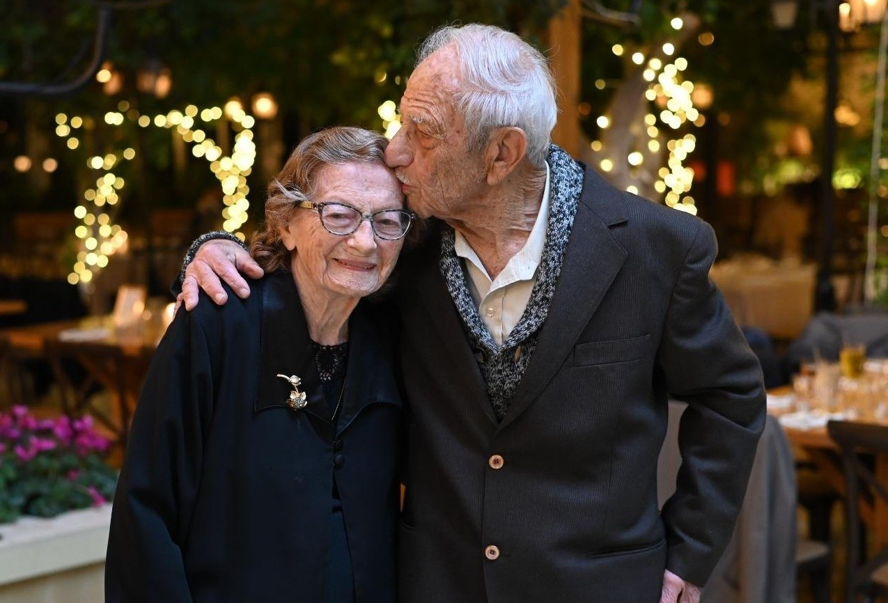
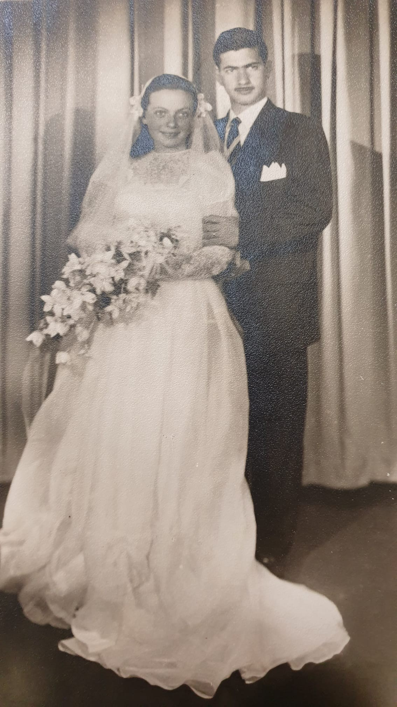
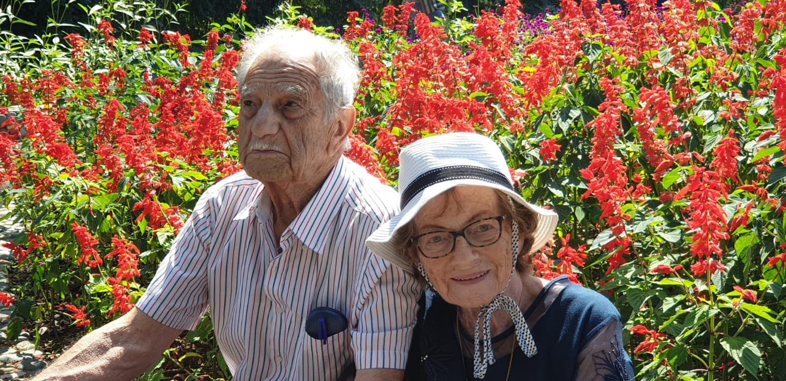
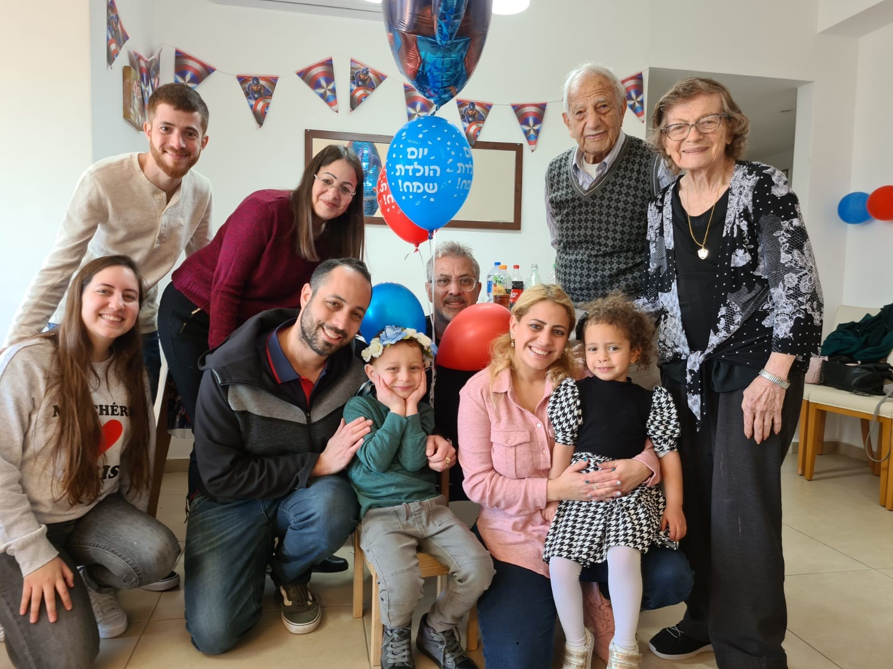
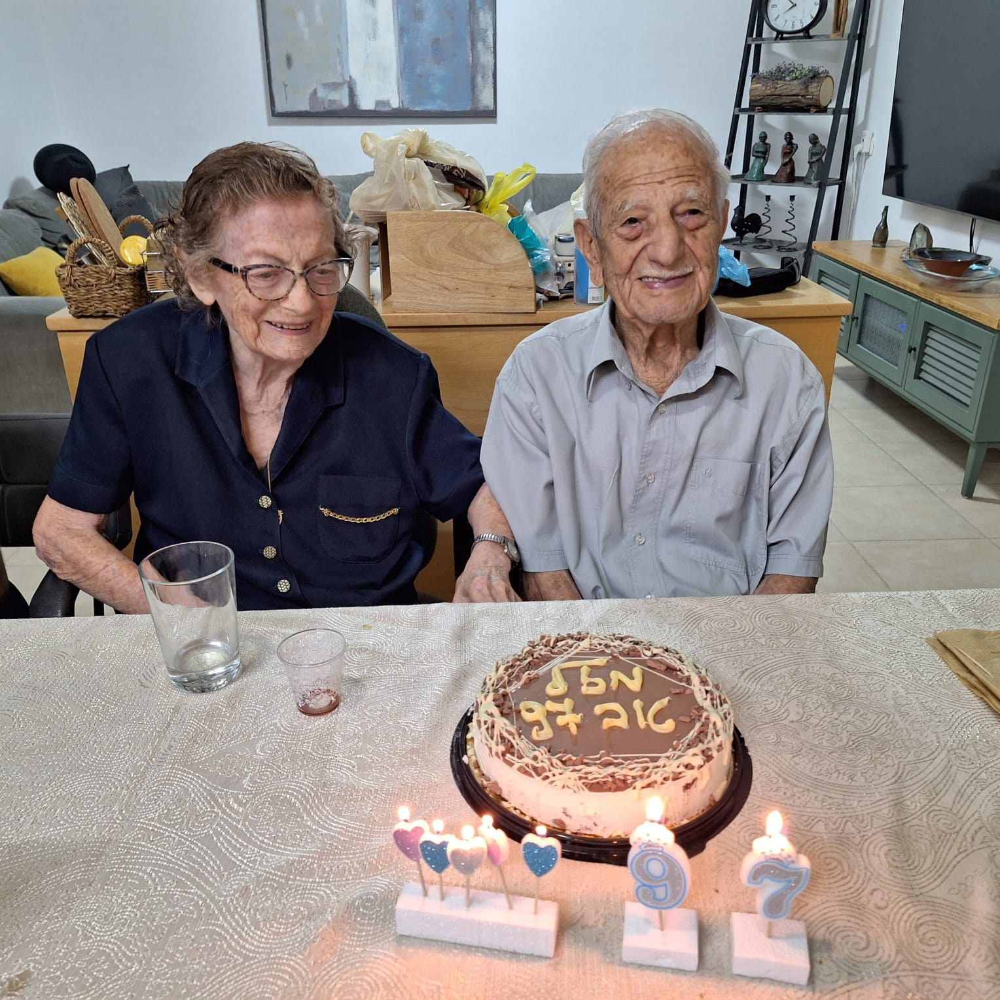
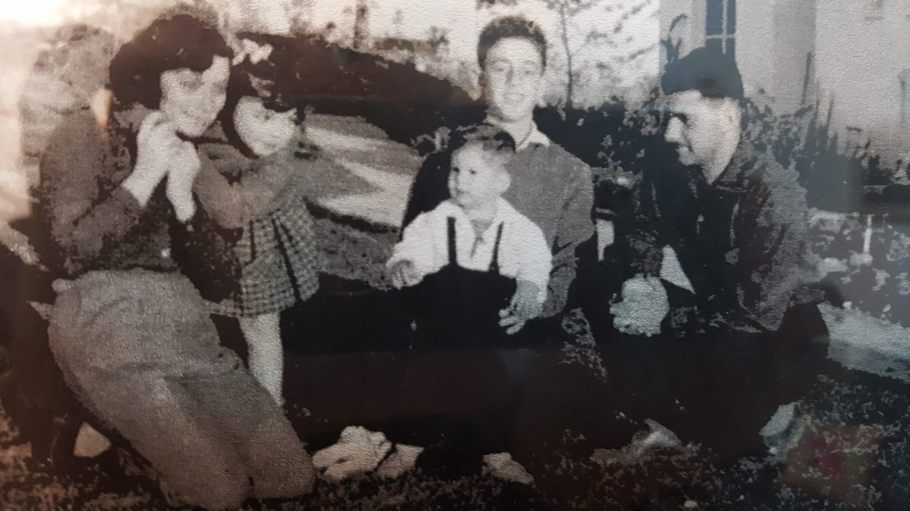
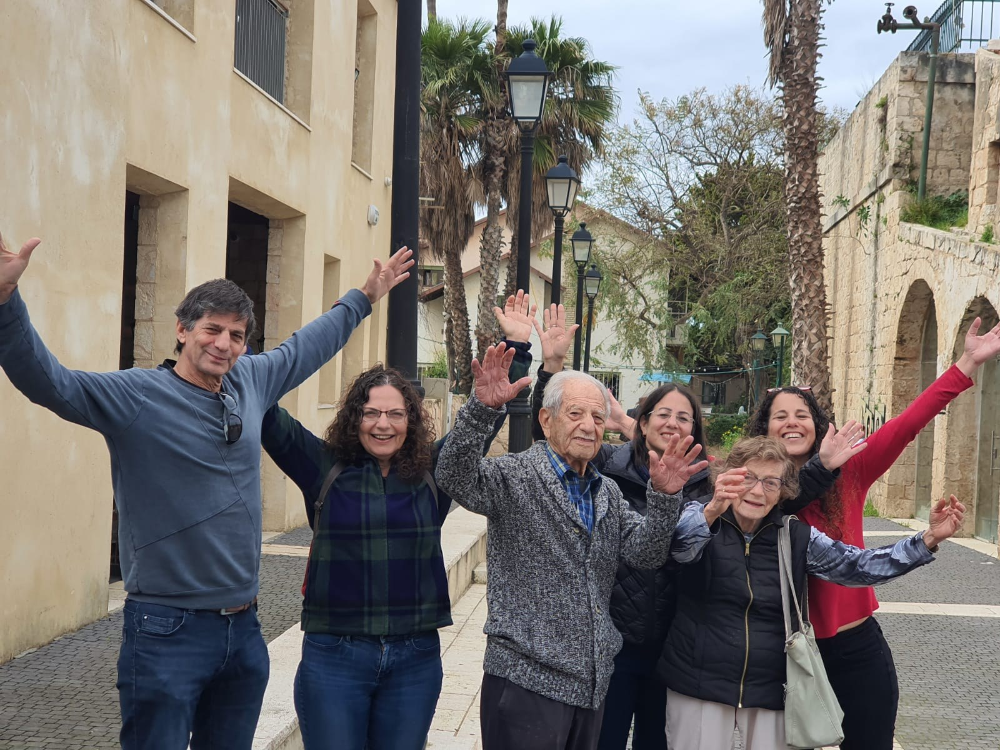
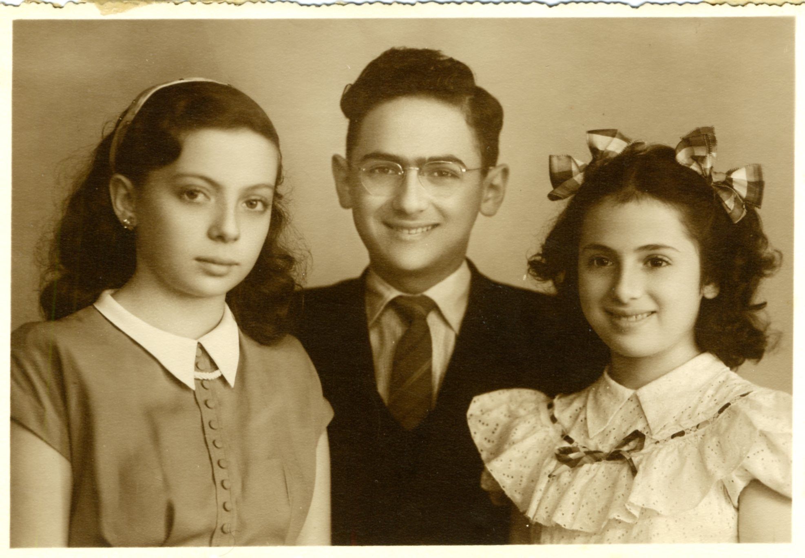
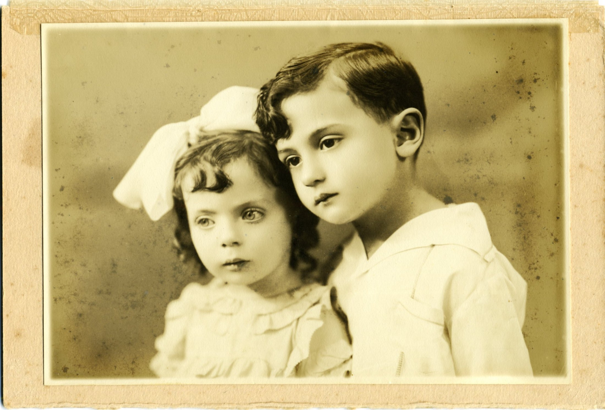
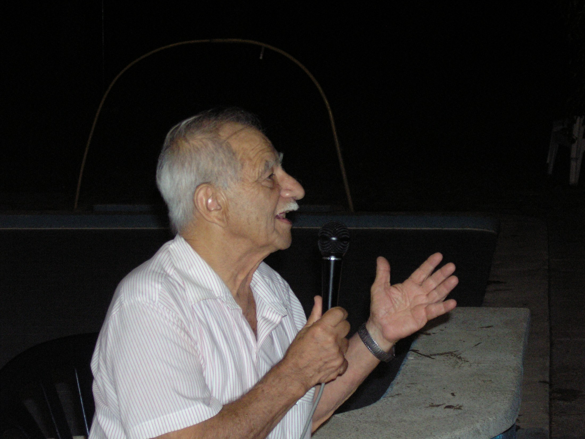

סוניה
סוניה הייתה אישה של נתינה, דאגה ואהבה בלתי נגמרת. היא ידעה ליצור סביבתה בית חם, עוטף ומלא תשומת לב — דרך האוכל, החיבוק, הדאגה למשפחה והיכולת לראות כל אדם.

לזכרם האהוב של
חיים של אהבה • משפחה • זיכרון
מי שהכיר את סוניה ואמיר ידע שהאהבה ביניהם הייתה נוכחת בכל מבט, בכל מחווה ובכל מילה — חברות עמוקה של שנים, בית חם ומשפחה מלוכדת.
סוניה הייתה אישה של נתינה, דאגה ואהבה בלתי נגמרת. היא ידעה ליצור סביבתה בית חם, עוטף ומלא תשומת לב — דרך האוכל, החיבוק, הדאגה למשפחה והיכולת לראות כל אדם.
אמיר היה חלוץ ברוחו: איש עשייה, ערכים, שירים וסיפורים. הוא נשא עמו סקרנות, הומור, אהבת אדם ומסירות גדולה למשפחה, לקיבוץ ולקהילה.
רגעים מתוך אלבום המשפחה









זיכרונות ותחנות בדרך
שני אנשים, שני עולמות, וחיים שנפתחו לאהבה גדולה.
מפגש שהפך לחברות עמוקה ולזוגיות נדירה.
בית חם, פתוח ומלא אהבה, אוכל, צחוק ושירים.
ילדים, נכדים וזיכרונות שנאספו לאורך השנים.
עשייה, ערבות הדדית, מסירות ונתינה לסובבים.
המורשת שלהם ממשיכה לחיות בלב המשפחה.
זיכרונות שנשארים בלב
״האהבה ביניהם הייתה נוכחת בכל מבט, בכל מחווה ובכל מילה.״— מתוך דברי הפרידה לסוניה
״אבא היה בעל נפלא, אבא חם ותומך וסבא מסור ומחובר.״— מתוך דברי הפרידה לאמיר
״נמשיך לשאת אותם בליבנו בכל רגע.״— המשפחה
מסמכי זיכרון משפחתיים